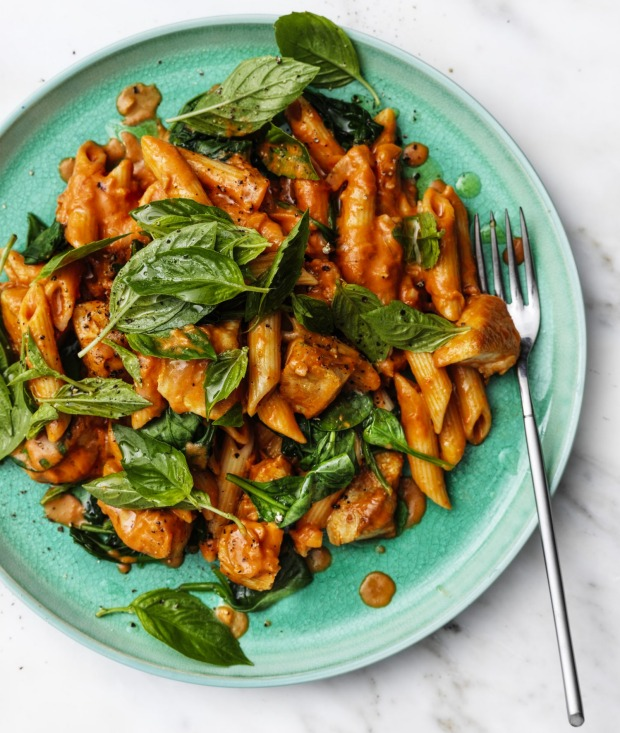

Rosé Chicken Pasta
- 500g Penne
- Lots of Butter
- $7 pack Chicken Breast
- 1 big Onion
- Half a $1 pack Celery
- 2 Tbps Garlic
- 1 jar Rose Sauce
- Decent amount Thyme, Oregano, Salt, Pepper
- 2 Handfuls Spinach
- As needed Olive Oil
- A bit of Green Pepper
- Garnish with Spring Onions
Instructions
- Cut the chicken into small cubes, marinate at least 1 hour in Olive Oil and assorted spices
- Dice the onions and celery, really small
- In an appropriately sized pot, cook the chicken. If it sticks add more olive oil.
- Once mostly cooked, take it outta there, put the Butter, Onion, Celery in, like 5 minutes. Don't leave!
- When onions smell really good, add Garlic and Peppers, cook 30 seconds.
- Add remaining spices. Stire for a few seconds. Add Sauce. Give it a minute. Taste. If not ideal add more spice.
- Add more salt, you probably under-did it.
- When it starts to bubble turn the heat down a bunch. Boil water on another burner. Add salt to water. Cook Pasta.
- Check Pasta in 8 minutes. Eat one. If not good, wait a minute and repeat until good.
- Its good? Drain, throw in spinach while its still hot.
- Put Pasta in bowl, put sauce on top. Cut up some Spring Onions and sprinkle them on top. Serve.